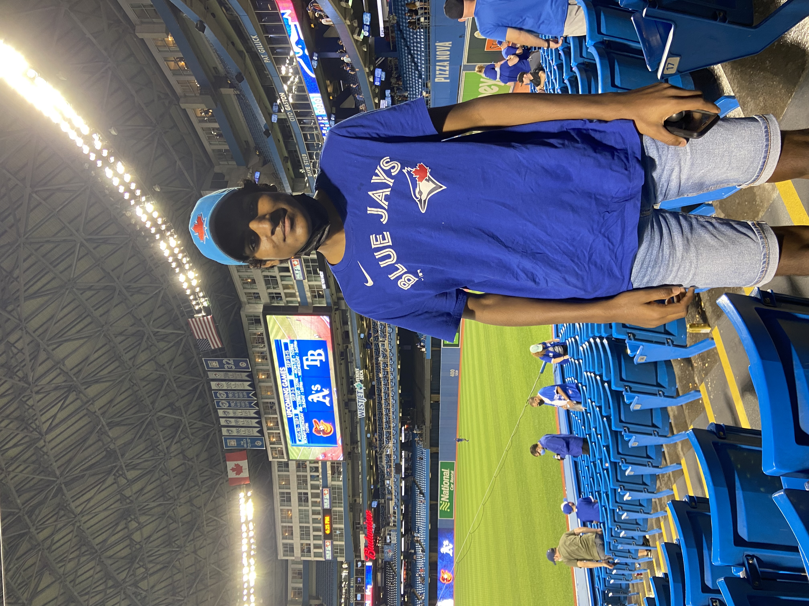
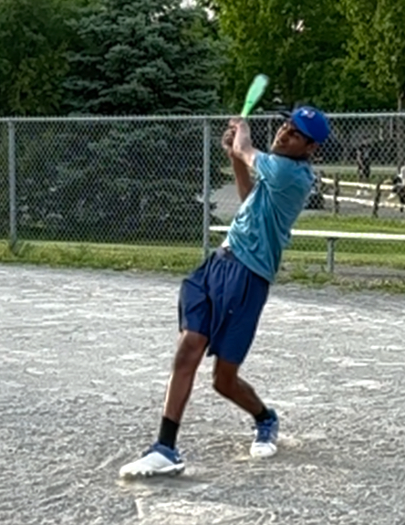
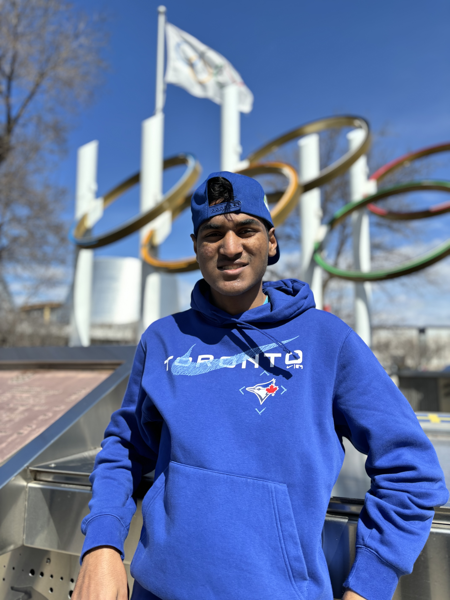
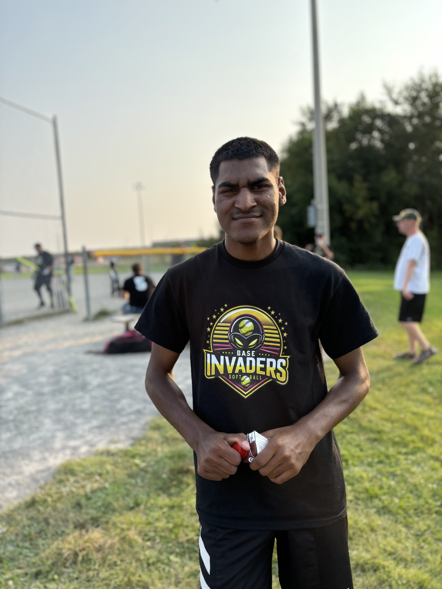
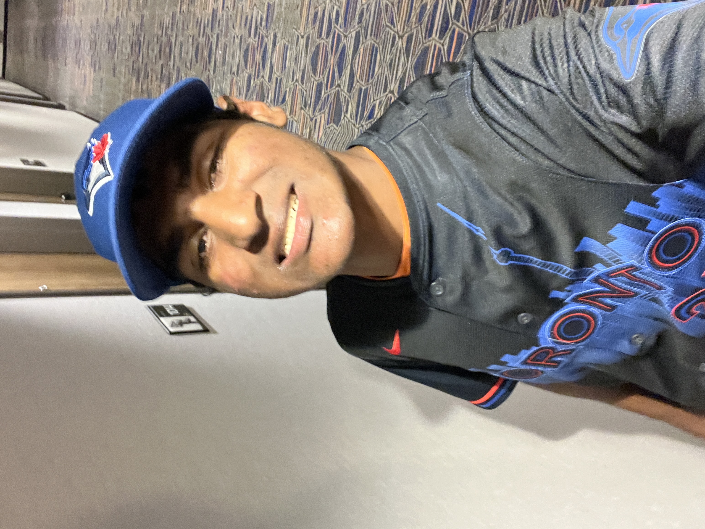
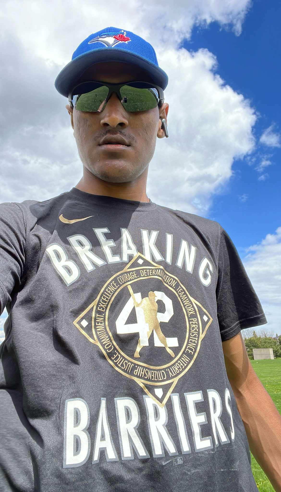
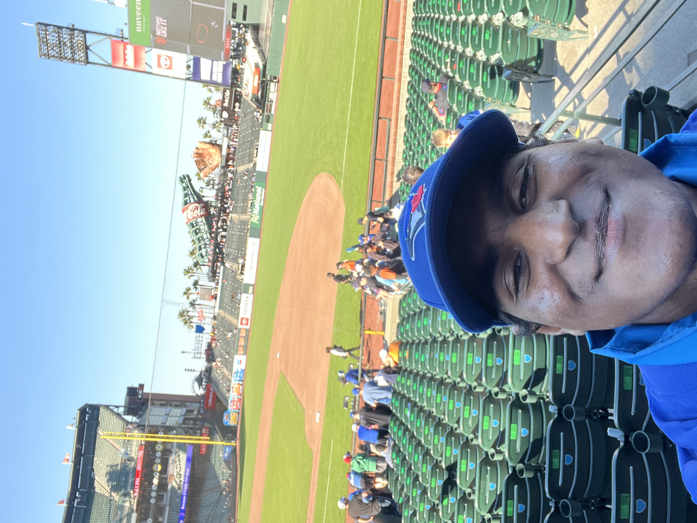

A Love for Baseball: My Journey and the Rise of Indian Representation in MLB
By Sachin Bhatia, October 09, 2024

Ottawa, Canada – My name is Sachin Bhatia, and I’m 20 years old. I've been living in Ottawa, Canada since I was 16 months old, when I came to Canada from India though adoption. My mother, who has been in Canada since she was four, has been my biggest supporter throughout my life. Growing up, I had a deep passion for sports. From a young age, my mother introduced me to various sports, and by the time I was four, I had joined a soccer team. I played soccer until I was 10, but that was also the age I discovered my favourite sport, baseball.
I only played three seasons of baseball between the ages of 10 and 16, and if I’m being honest, I wasn’t very good. However, I loved the game regardless of my performance. As a brown person, I always felt welcomed at baseball camps, in local leagues, while umpiring little league games, and while attending games. My favorite team has always been the Toronto Blue Jays. Growing up in Canada, I naturally followed hockey as well, but I found the baseball community to be much more welcoming and less toxic compared to some aspects of hockey culture.
The first time I played baseball, I was 10 years old, and my mom signed me up for a recreational league. I only managed five hits all season, which was discouraging, and I almost gave up on the sport. Despite this, I continued watching baseball, trying to balance it with my love for hockey. When I turned 16, I decided to give baseball another shot, signing up for the spring and summer seasons. I still wasn’t very good, but my teammates and coaches were incredibly supportive. I made some great catches and showed off my speed, but I couldn’t hit consistently. Despite my lack of skill, I never stopped giving it my all and having fun on the field.
This past summer, I decided to try something new and signed up for an adult recreational slow-pitch softball league. It was my first time playing softball, and the early part of the season was rough—I struck out every time I stepped up to the plate in the first five games. Determined to improve, I spent two weeks practicing on my own at the local park, bringing my tee, bat, and baseballs to work on my swing. After those two weeks of hard work, the results were dramatic. I started hitting consistently, finishing the season with the highest batting average on my team.
Baseball has been a constant source of joy in my life. My mom and I even went on several road trips to watch the Blue Jays play. In 2022, we drove to Boston to watch the Jays face the Red Sox in a game where Toronto won 28-5. The following year, we saw them play in Pittsburgh and Philadelphia, and this past summer, we went on a huge trip to see the Jays in Seattle, San Francisco, and Phoenix. I love going to baseball games all over. No matter where I am, I always find fellow Toronto Blue Jays fans all over. I also love having friendly conversations with opposing teams’ fans. The baseball community is amazingly welcoming, and that makes me very happy and proud to be a baseball fan.

One of the things that excites me most about baseball today is the increasing presence of players from Indian backgrounds in the MLB. In 2023, the Blue Jays selected Arjun Nimmala, the highest MLB draft pick of Indian descent, and it was a huge moment for me. I had hoped that the Jays would draft him, and when it happened, it felt surreal to see someone who looked like me on my favorite team. Growing up, I’d often create custom players in the MLB The Show video game to look like me, but now I get to watch Arjun’s real-life journey to the major leagues. He’s not the only one breaking barriers—Kumar Rocker, who made his MLB debut with the Texas Rangers, became the first player of Indian descent to play in a big-league game this past September.
These moments aren’t just coincidences; they are part of a broader movement. Here in Canada and America, multiculturalism and diversity is very high and its only growing from here. I see many brown kids like me on Canada's Little League World Series team each year, a sign of how Canada is embracing diversity and inclusion. Additionally, MLB development projects are actively growing the game of baseball in India, teaching kids a sport that’s not too far removed from cricket, where India has been a powerhouse for decades. It’s only a matter of time before both Indian decent and Indian nationality players start making their mark in the MLB. A new professional baseball league, Baseball United, is also launching in October 2025, bringing professional baseball to the Middle East and South Asia, which includes a team from India called the Mumbai Cobras.
As a baseball fan of Indian descent, I’m incredibly proud of this growing wave of multiculturalism in the sport. It’s exciting and necessary for the future of baseball, and I can’t wait to see where it leads. This beautiful game is becoming even more inclusive, and players from all backgrounds are beginning to take the main stage. The future of baseball is bright, and I’m eager to see how far this journey will go.
